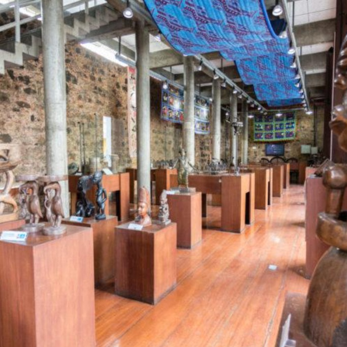

Roots Guide
Pontos Historicos

Museu Nacional da Cultura Afro - Brasileira (MUNCAB)
O MUNCAB é um museu dedicado à preservação e valorização da cultura afro-brasileira. O espaço aborda temas como ancestralidade africana, resistência negra, quilombos, música, culinária e religiosidade afro-brasileira. Curiosidades: É considerado um dos principais museus afrodescendentes do Brasil. Possui exposições sobre arte africana e afro-brasileira contemporânea. O museu também promove oficinas, eventos e debates culturais. Endereço: Rua das Vassouras, 25 – Centro Histórico, Salvador – BA Link do Maps: link

Casa do Benin
Museu que celebra a relação cultural, religiosa e comercial entre a Bahia e o Reino do Benin. Representa o elo direto entre Salvador e a África, valorizando a herança iorubá no Brasil. Curiosidades: Projeto arquitetônico de Lina Bo Bardi. Tem restaurante de comida afro-baiana e beninense. Ponto chave do afroturismo em Salvador. Data de fundação: Inaugurada em 6 de maio de 1988. Quem construiu: Idealizada por Pierre Verger. Arquitetura de Lina Bo Bardi. Material: Sobrado colonial. Acervo em madeira, bronze, terracota e tecido. Celebração: Eventos no 20 de novembro e festas do calendário afro-baiano. Valor de entrada: Gratuito, funciona de terça a sábado. Endereço: R. Padre Agostinho Gomes, 17 - Pelourinho, Salvador - BA, 40026-190 Link do Maps: link